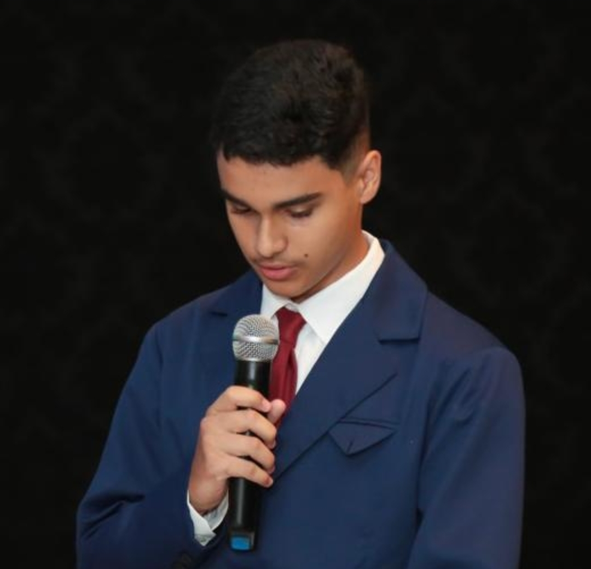

Sobre Mim
Olá! Meu nome é Lucas Francisco dos Santos e sou de Lunardelli, onde atualmente moro. Estou no segundo ano do ensino médio e curso técnico em Desenvolvimento de Sistemas, com um forte interesse em programação.
Já tive uma experiência profissional, embora tenha sido por um curto período. Além disso, gosto de me manter ativo, frequentando a academia e jogando.
Ainda não tenho projetos específicos em mente, mas estou pensando em novas oportunidades. Meu lema é viver bem, sempre buscando um equilíbrio na vida.
voltar